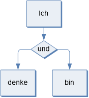

認爲 rènwéi - ראַכטןט trakhtn - ਸੋਚੋ Sōcō - සිතන්න sitanna - فکر fakkara - सोच soch - aetaqid اعت思考的 - Sīkǎo de - Η νόηση της νόησης
Denken des Denkens
Hier werden Beiträge und Texte zum Denken über das Denken erscheinen. Im Zentrum stehen Zusammenhänge von logischem und physischem Denkprozess.
Auf dieser Basis werden Denkregel – sprich Logik - entwickelt, um Grundlagen für eine maschinelle Intelligenz zu schaffen.
Denkregeln und Denkprozesse
Zum Anlesen einige Hinweise:

- Logik ist nicht ideologisch: Es sind Ewigkeitsregeln, die in der Logik ohne Zeit und Raum als Regelwerk des Denkens ausgedrückt werden. Basis dieser Entwicklung ist die hegelsche Aussage, dass die Gesetze des Seines zugleich die Gesetze des Denkens sind. Die Umsetzung dieser These ist mit vielen Vermittlungsschritten gepflastert. Ein erster Schritt führt zu einer Prozesslogik.
- Logisches und physisches Denken: Ein entscheidender Baustein ist die Entwicklung des Verhältnisses von logischem und physischem Denkprozess. Erst auf dieser Basis lassen sich Selbstbezüglichkeiten, Identitäten, Gegensätze, Widersprüche usw. logisch-physisch korrekt behandeln.
- Denkregel und Gesellschaft: Technische Denkmaschinen werden Menschen überflüssig machen. Sie müssen controllt und gecheckt werden. Frage: Wie soll das gehen? Positiv könnten Denkmaschinen in der Medizin, Psychologie, Übersetzungen, Projekten usw. usf. eingesetzt werden. Negativ wäre vor allem der militärische und unterdrückende Einsatz.
- Regeln des Denkens zielen letztlich im logisch-natürlichen Denkprozess auf physische Realisierung. These: Logisches ist nicht ohne physisches Denken widerspruchsfrei (A = A als erhaltende Identität in Denkprozessen) zu entwickeln. Die Grenze des Identitätssatzes liegt in der Anwendung als Denkregel: A = A enthält keinen neuen Inhalt. Die zu erhaltende und zu kontrollierende Identität im Denken über irgendwelche Denkgegenstände ist auf logisch-physische Verhältnisse begrenzt.
Paul Rieckmann
info@denkcontor.de